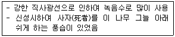
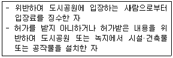
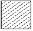
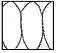
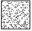
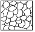
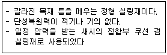
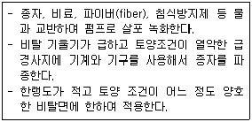
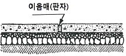

조경기능사 (2016-04-02 기출문제)
1과목: 조경일반
1. 형태는 직선 또는 규칙적인 곡선에 의해 구성되고 축을 형성하며 연못이나 화단 등의 각 부분에도 대칭형이 되는 조경 양식은?
- 자연식
- 풍경식
- 정형식
- 절충식
(정답률: 82%)

2. 다음 중 정원에 사용되었던 하하(Ha-ha) 기법을 가장 잘 설명한 것은?
- 정원과 외부사이 수로를 파 경계하는 기법
- 정원과 외부사이 언덕으로 경계하는 기법
- 정원과 외부사이 교목으로 경계하는 기법
- 정원과 외부사이 산울타리를 설치하여 경계하는 기법
(정답률: 87%)
3. 다음 고서에서 조경식물에 대한 기록이 다루어지지 않은 것은?
- 고려사
- 악학괘범
- 양화소록
- 동국이상국집
(정답률: 80%)
4. 스페인 정원에 관한 설명으로 틀린 것은?
- 규모가 웅장하다.
- 기하학적인 터 가르기를 한다.
- 바닥에는 색채타일을 이용하였다.
- 안달루시아(Andalusia) 지방에서 발달했다.
(정답률: 71%)
5. 다음 중 고산수수법의 설명으로 알맞은 것은?
- 가난함이나 부족함 속에서도 아름다움을 찾아내어 검소하고 한적한 삶을 표현
- 이끼 낀 정원석에서 고담하고 한아를 느낄 수 있도록 표현
- 정원의 못을 복잡하게 표현하기 위해 호안을 곡절시켜 심(⼼)자와 같은 형태의 못을 조성
- 물이 있어야 할 곳에 물을 사용하지 않고 돌과 모래를 사용해 물을 상징적으로 표현
(정답률: 90%)
6. 경복궁 내 자경전의 꽃담 벽화문양에 표현되지 않은 식물은?
- 매화
- 석류
- 산수유
- 국화
(정답률: 74%)
7. 우리나라 부유층의 민가정원에서 유교의 영향으로 부녀자들을 위해 특별히 조성된 부분은?
- 전정
- 중정
- 후정
- 주정
(정답률: 91%)
8. 다음 중 고대 이집트의 대표적인 정원수는?

- 파피루스
- 버드나무
- 장미
- 시카모어
(정답률: 71%)
9. 다음 중 독일의 풍경식 정원과 가장 관계가 깊은 것은?
- 한정된 공간에서 다양한 변화를 추구
- 동양의 사의주의 자연풍경식을 수용
- 외국에서 도입한 원예식물의 수용
- 식물생태학, 식물지리학 등의 과학이론의 적용
(정답률: 77%)
10. 다음 중 사적인 정원이 공적인 공원으로 역할전환의 계기가 된 사례는?
- 에스테장
- 베르사이유궁
- 켄싱턴 가든
- 센트럴 파크
(정답률: 81%)
11. 주택정원거실 앞쪽에 위치한 뜰로 옥외생활을 즐길 수 있는 공간은?
- 안뜰
- 앞뜰
- 뒤뜰
- 작업뜰
(정답률: 68%)
12. 조경계획 및 설계과정에 있어서 각 공간의 규모, 사용재료, 마감방법을 제시해 주는 단계는?
- 기본구상
- 기본계획
- 기본설계
- 실시설계
(정답률: 50%)
13. 도시 내부와 외부의 관련이 매우 좋으며 재난 시 시민들의 빠른 대피에 큰 효과를 발휘하는 녹지 형태는?
- 분산식
- 방사식
- 환상식
- 평행식
(정답률: 80%)
14. 다음 [보기]의 행위 시 도시공원 및 녹지 등에 관한 법률상의 벌칙 기준은?

- 2년 이하의 징역 또는 3천만 원 이하의 벌금
- 1년 이하의 징역 또는 1천만 원 이하의 벌금
- 1년 이하의 징역 또는 500만 원 이하의 벌금
- 1년 이하의 징역 또는 3천만 원 이하의 벌금
(정답률: 79%)
15. 표제란에 대한 설명으로 옳은 것은?
- 도면명은 표제란에 기입하지 않는다.
- 도면 제작에 필요한 지침을 기록한다.
- 도면번호, 도명, 작성자명, 작성일자 등에 관한 사항을 기입한다.
- 용지의 긴 쪽 길이를 가로 방향으로 설정할 때 표제란은 왼쪽 아래 구석에 위치한다.
(정답률: 81%)
2과목: 조경재료
16. 먼셀 색체계의 기본색인 5가지 주요 색상으로 바르게 짝지어진 것은?
- 빨강, 노랑, 초록, 파랑, 주황
- 빨강, 노랑, 초록, 파랑, 보라
- 빨강, 노랑, 초록, 파랑, 청록
- 빨강, 노랑, 초록, 남색, 주황
(정답률: 79%)
17. 건설재료의 골재의 단면표시 중 잡석을 나타낸 것은?




(정답률: 68%)
18. 대형건물의 외벽도색을 위한 색채계획을 할 때 사용하는 컬러샘플(color sample)은 실제의 색보다 명도나 채도를 낮추어서 사용하는 것이 좋다. 이는 색채의 어떤 현상 때문인가?
- 착시효과
- 동화현상
- 대비효과
- 면적효과
(정답률: 79%)
19. 색채와 자연환경에 대한 설명으로 옳지 않은 것은?
- 풍토색은 기후와 토지의 색, 즉 지역의 태양빛, 흙의 색 등을 의미한다.
- 지역색은 그 지역의 특성을 전달하는 색채와 그 지역의 역사, 풍속, 지형, 기후 등의 지방색과 합쳐 표현된다.
- 지역색은 환경색채계획 등 새로운 분야에서 사용되기 시작한 용어이다.
- 풍토색은 지역의 건축물, 도로환경, 옥외광고물 등의 특징을 갖고 있다.
(정답률: 71%)
20. 오른손잡이의 선긋기 연습에서 고려해야 할 사항이 아닌 것은?
- 수평선 긋기 방향은 왼쪽에서 오른쪽으로 긋는다.
- 수직선 긋기 방향은 위쪽에서 아래쪽으로 내려 긋는다.
- 선은 처음부터 끝나는 부분까지 일정한 힘으로 한 번에 긋는다.
- 선의 연결과 교차부분이 정확하게 되도록 한다.
(정답률: 79%)
21. 다음 중 방부 또는 방충을 목적으로 하는 방법으로 가장 부적합한 것은?
- 표면탄화법
- 약제도포법
- 상압주입법
- 마모저항법
(정답률: 77%)
22. 조경공사의 돌쌓기용 암석을 운반하기에 가장 적합한 재료는?
- 철근
- 쇠파이프
- 철망
- 와이어로프
(정답률: 86%)
23. 다음 [보기]가 설명하는 건설용 재료는?

- 프라이머
- 코킹
- 퍼티
- 석고
(정답률: 71%)
24. 쇠망치 및 날메로 요철을 대강 따내고, 거친 면을 그대로 두어 부풀린 느낌으로 마무리 하는 것으로 중량감, 자연미를 주는 석재가공법은?
- 혹두기
- 정다듬
- 도드락다듬
- 잔다듬
(정답률: 77%)
25. 건설용 재료의 특징 설명으로 틀린 것은?
- 미장재료 - 구조재의 부족한 요소를 감추고 외벽을 아름답게 나타내 주는 것
- 플라스틱 - 합성수지에 가소제, 채움제, 안정제, 착색제 등을 넣어서 성형한 고분자 물질
- 역청재료 - 최근에 환경 조형물이나 안내판 등에 널리 이용되고, 입체적인 벽면구성이나 특수지역의 바닥 포장재로 사용
- 도장재료 - 구조재의 내식성, 방부성, 내마멸성, 방수성, 방습성 및 강도 등이 높아지고 광택 등 미관을 높여 주는 효과를 얻음
(정답률: 79%)
26. 내부 진동기를 사용하여 콘크리트 다지기를 실시할 때 내부 진동기를 찔러 넣는 간격은 얼마 이하를 표준으로 하는 것이 좋은가?
- 30㎝
- 50㎝
- 80㎝
- 100㎝
(정답률: 71%)
27. 굵은 골재의 절대 건조 상태의 질량이 1000g, 표면건조포화 상태의 질량이 1100g, 수중질량이 650g 일 때 흡수율은 몇 %인가?
- 10.0%
- 28.6%
- 31.4%
- 35.0%
(정답률: 52%)
28. 시멘트의 강열감량(ignition loss)에 대한 설명으로 틀린 것은?
- 시멘트 중에 함유된 H2O와 CO2의 양이다.
- 클링커와 혼합하는 석고의 결정수량과 거의 같은 양이다.
- 시멘트에 약 1000℃의 강한 열을 가했을 때의 시멘트 감량이다.
- 시멘트가 풍화하면 강열감량이 적어지므로 풍화의 정도를 파악하는데 사용된다.
(정답률: 61%)
29. 아스팔트의 물리적 성질과 관련된 설명으로 옳지 않은 것은?
- 아스팔트의 연성을 나타내는 수치를 신도라 한다.
- 침입도는 아스팔트의 콘시스턴시를 임의 관입저항으로 평가하는 방법이다.
- 아스팔트에는 명확한 융점이 있으며, 온도가 상승하는데 따라 연화하여 액상이 된다.
- 아스팔트는 온도에 따른 콘시스턴시의 변화가 매우 크며, 이 변화의 정도를 감온성이라 한다.
(정답률: 60%)
30. 새끼(볏짚제품)의 용도 설명으로 가장 부적합한 것은?
- 더위에 약한 수목을 보호하기 위해서 줄기에 감는다.
- 옮겨 심는 수목의 뿌리분이 상하지 않도록 감아준다.
- 강한 햇볕에 줄기가 타는 것을 방지하기 위하여 감아준다.
- 천공성 해충의 침입을 방지하기 위하여 감아준다.
(정답률: 68%)
31. 무너짐 쌓기를 한 후 돌과 돌 사이에 식재하는 식물 재료로 가장 적합한 것은?
- 장미
- 회양목
- 화살나무
- 꽝꽝나무
(정답률: 84%)
32. 다음 중 아황산가스에 강한 수종이 아닌 것은?
- 고로쇠나무
- 가시나무
- 백합나무
- 칠엽수
(정답률: 68%)
33. 단풍나무과(科)에 해당하지 않는 수종은?
- 고로쇠나무
- 복자기
- 소사나무
- 신나무
(정답률: 61%)
34. 다음 중 양수에 해당하는 수종은?
- 일본잎갈나무
- 조록싸리
- 식나무
- 사철나무
(정답률: 64%)
35. 다음 중 내염성이 가장 큰 수종은?
- 사철나무
- 목련
- 낙엽송
- 일본목련
(정답률: 70%)
3과목: 조경 시공 및 관리
36. 형상수(topiary)를 만들기에 가장 적합한 수종은?
- 주목
- 단풍나무
- 개벚나무
- 전나무
(정답률: 85%)
37. 화단에 심겨지는 초화류가 갖추어야 할 조건으로 가장 부적합한 것은?
- 가지수는 적고 큰 꽃이 피어야 한다.
- 바람, 건조 및 병·해충에 강해야 한다.
- 꽃의 색채가 선명하고, 개화기간이 길어야 한다.
- 성질이 강건하고 재배와 이식이 비교적 용이해야 한다.
(정답률: 87%)
38. 수종과 그 줄기색(樹⽪)의 연결이 틀린 것은?
- 벽오동은 녹색 계통이다.
- 곰솔은 흑갈색 계통이다.
- 소나무는 적갈색 계통이다.
- 흰말채나무는 흰색 계통이다.
(정답률: 76%)
39. 귀룽나무(Prunus padus L.)에 대한 특성으로 맞지 않는 것은?
- 원산지는 한국, 일본이다.
- 꽃과 열매는 백색계열이다.
- Rosaceae과(科) 식물로 분류된다.
- 생장속도가 빠르고 내공해성이 강하다.
(정답률: 60%)
40. 능소화(Campsis grandifolia K.Schum.)의 설명으로 틀린 것은?
- 낙엽활엽덩굴성이다.
- 잎은 어긋나며 뒷면에 털이 있다.
- 나팔모양의 꽃은 주홍색으로 화려하다.
- 동양적인 정원이나 사찰 등의 관상용으로 좋다.
(정답률: 74%)
41. 봄에 향나무의 잎과 줄기에 갈색의 돌기가 형성되고 비가 오면 한천모양이나 젤리모양으로 부풀어 오르는 병은?
- 향나무 가지마름병
- 향나무 그을음병
- 향나무 붉은별무늬병
- 향나무 녹병
(정답률: 63%)
42. 잔디의 병해 중 녹병의 방제약으로 옳은 것은?
- 만코제브(수)
- 테부코나졸(유)
- 에마멕틴벤조에이트(유)
- 글루포시네이트암모늄(액)
(정답률: 50%)
43. 25% A유제 100mL를 0.⑤%의 살포액으로 만드는데 소요되는 물의 양(L)으로 가장 가까운 것은? (단, 비중은 1.0 이다.)
- 5
- 25
- 50
- 100
(정답률: 60%)
44. 해충의 체(體) 표면에 직접 살포하거나 살포된 물체에 해충이 접촉되어 약제가 체내에 침입하여 독(毒) 작용을 일으키는 약제는?
- 유인제
- 접촉살충제
- 소화중독제
- 화학불임제
(정답률: 85%)
45. 도시공원 녹지 중 수림지 관리에서 그 필요성이 가장 떨어지는 것은?
- 시비(施肥)
- 하예(下刈)
- 제벌(除伐)
- 병충해 방제
(정답률: 60%)
46. 다음 설명에 해당하는 파종 공법은?

- 식생매트공
- 볏짚거적덮기공
- 종자분사파종공
- 지하경뿜어붙이기공
(정답률: 77%)
47. 장미 검은무늬병은 주로 식물체 어느 부위에 발생하는가?
- 꽃
- 잎
- 뿌리
- 식물전체
(정답률: 81%)
48. 진딧물의 방제를 위하여 보호하여야 하는 천적으로 볼 수 없는 것은?
- 무당벌레류
- 꽃등에류
- 솔잎벌류
- 풀잠자리류
(정답률: 62%)
49. 수목의 이식 전 세근을 발달시키기 위해 실시하는 작업을 무엇이라 하는가?
- 가식
- 뿌리돌림
- 뿌리분 포장
- 뿌리외과수술
(정답률: 85%)
50. 수목을 장거리 운반할 때 주의해야 할 사항이 아닌 것은?
- 병충해 방제
- 수피 손상 방지
- 분 깨짐 방지
- 바람 피해 방지
(정답률: 80%)
51. 인간이나 기계가 공사 목적물을 만들기 위하여 단위물량 당 소요로 하는 노력과 품질을 수량으로 표현한 것을 무엇이라 하는가?
- 할증
- 품셈
- 견적
- 내역
(정답률: 86%)
52. 내구성과 내마멸성이 좋아 일단 파손된 곳은 보수가 어려우므로 시공 때 각별한 주의가 필요하다. 다음과 같은 원로 포장 방법은?

- 마사토 포장
- 콘크리트 포장
- 판석 포장
- 벽돌 포장
(정답률: 79%)
53. 철근의 피복두께를 유지하는 목적으로 틀린 것은?
- 철근량 절감
- 내구성능 유지
- 내화성능 유지
- 소요의 구조내력확보
(정답률: 81%)
54. 다음 중 건설공사의 마지막으로 행하는 작업은?
- 터닦기
- 식재공사
- 콘크리트공사
- 급·배수 및 호안공
(정답률: 84%)
55. 경사진 지형에서 흙이 무너지는 것을 방지하기 위하여 토양의 안식각을 유지하며 크고 작은 돌을 자연스러운 상태가 되도록 쌓아 올리는 방법은?
- 평석쌓기
- 견치석쌓기
- 디딤돌쌓기
- 자연석 무너짐쌓기
(정답률: 83%)
56. 작업현장에서 작업물의 운반작업 시 주의사항으로 옳지 않은 것은?
- 어깨높이 보다 높은 위치에서 하물을 들고 운반하여서는 안 된다.
- 운반시의 시선은 진행방향을 향하고 뒷걸음 운반을 하여서는 안 된다.
- 무거운 물건을 운반할 때 무게 중심이 높은 하물은 인력으로 운반하지 않는다.
- 단독으로 긴 물건을 어깨에 메고 운반할 때에는 뒤쪽을 위로 올린 상태로 운반한다.
(정답률: 84%)
57. 예불기(예취기) 작업 시 작업자 상호간의 최소 안전거리는 몇 m 이상이 적합한가?
- 4m
- 6m
- 8m
- 10m
(정답률: 75%)
58. 옹벽자체의 자중으로 토압에 저항하는 옹벽의 종류는?
- L형 옹벽
- 역T형 옹벽
- 중력식 옹벽
- 반중력식 옹벽
(정답률: 68%)
59. 지형도상에서 2점간의 수평거리가 200m이고, 높이차가 5m라 하면 경사도는 얼마인가?
- 2.5%
- 5.0%
- 10.0%
- 50.0%
(정답률: 60%)
60. 옥상녹화 방수 소재에 요구되는 성능 중 가장 거리가 먼 것은?
- 식물의 뿌리에 견디는 내근성
- 시비, 방제 등에 견디는 내약품성
- 박테리아에 의한 부식에 견디는 성능
- 색상이 미려하고 미관상 보기 좋은 것
(정답률: 79%)